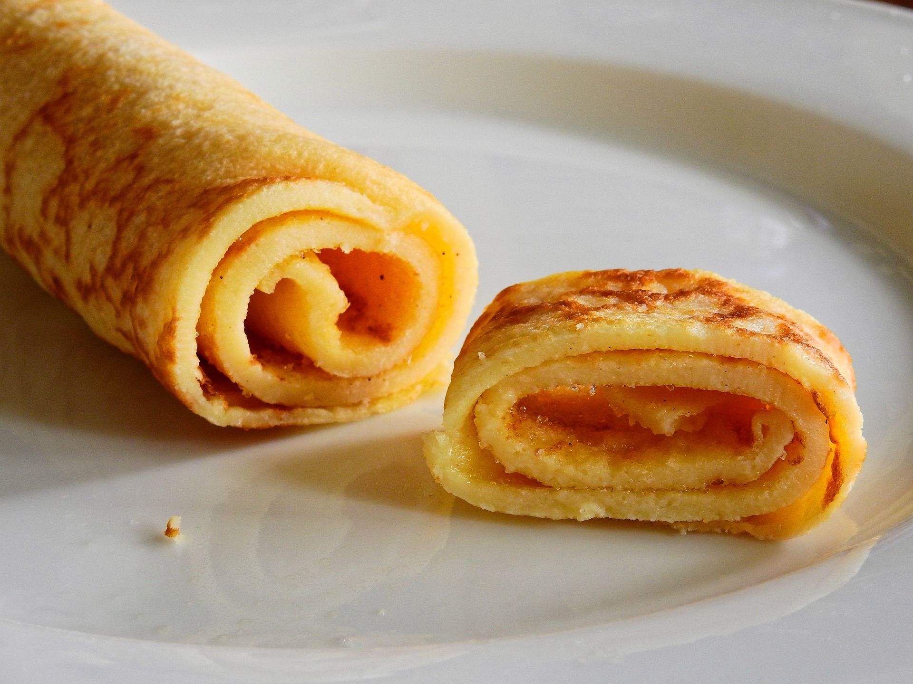

Real "Palatschinken" from Austria

Description
Austria's version of pancakes, Palatschinken, are delicious with sweet and savoury fillings, or chopped into soups.
Ingredients
- 1 cup all-purpose flour
- 1 pinch of salt
- 2 tbsp sugar
- 240 ml / 1 cup milk
- 2 large eggs
- Whisk the flour, milk, sugar, and salt together untill smooth, then whisk in the eggs.
- Heat 2 tablespoons of oil or butter in a pan over medium-high heat and start the first pancake by pouring in roughly 4 tablespoons of batter. The pan floor should be covered thinly but completely. Allow to brown slightly, turn, and brown on the other side. Remove and continue making the individual pancakes, stacking them as they are ready. Keep warm on a covered plate. Add 2 tablespoons of oil for each pancake.